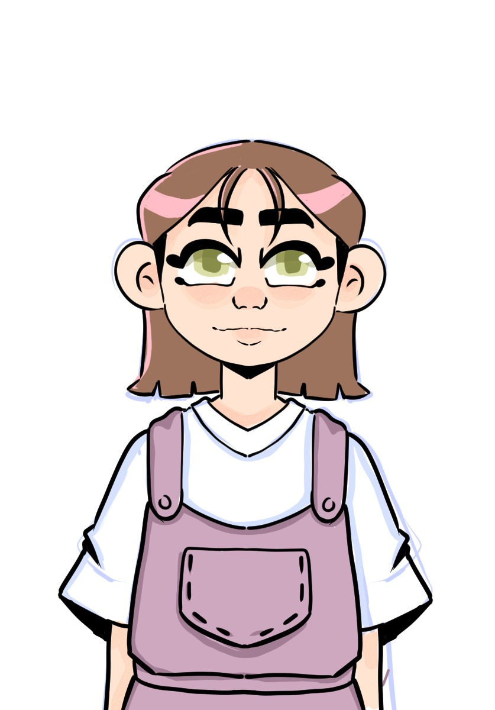
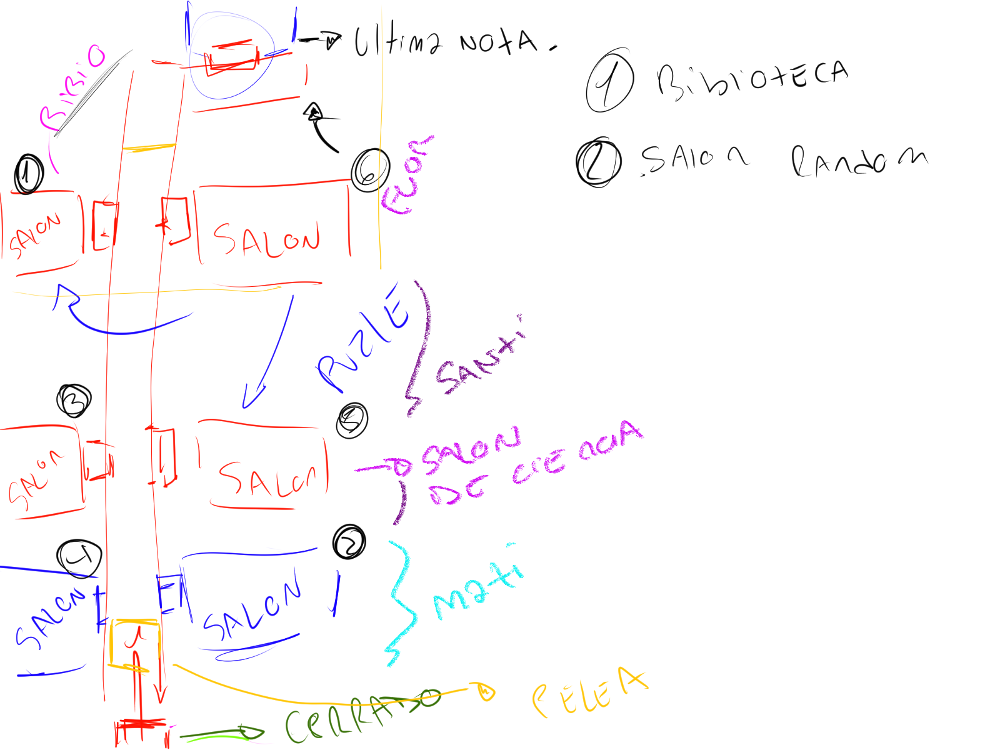

Un día una chica con sus amigas van a explorar una escuela abandonada, pero un suceso inesperado la lleva
a una época completamente distinta. Sus amigas no están, y nota que su entorno ha cambiado drásticamente.
Esa escuela demacrada ahora tenía un aspecto sospechosamente pulcro, pero no hay nadie.
¿Qué pasó? ¿Dónde están sus amigas?
¿Qué es Juego de Miedito?
Es un videojuego de Rol por turnos
que NO pretende perturbar al jugador, sino que busca intrigarlo, incomodarlo pero también impulsarlo a investigar
que es lo que ocurrió, el jugador tiene el control de la chica que se despierta en la escuela abandonada. Te
podés mover en cuatro direcciones con las flechas del teclado e interactuar con Enter o Espacio y correr con
Shift Izquierdo. También no es como un juego de rol por turnos cualquiera, sino que las habilidades se
adquieren por medio de libros que se pueden hallar en los mapas del videojuego, además no hay un sistema de
niveles, sino que la protagonista se hace espiritualmente más poderosa por medio de su equipamiento. Hay
objetos que uno puede adquirir por diferentes medios que le permite curar salud y remover estados alterados
(Veneno, Ceguera, etc.). El objetivo del jugador es el de hacer que la protagonista sea capaz de resistir al
ataque de un espíritu, riesgo que el videojuego va insinuando en textos que el jugador puede leer opcionalmente,
hay objetos que le informan al jugador piezas de la historia de lo que ocurrió en aquella escuela abandonada.
Es una chica normal, que tiene su grupo de amigas, tiene buenas notas en el colegio y una
familia ideal. Tiene tres mascotas, un perro y dos gatas. Le gusta hacer deportes y tiene pensado estudiar una
carrera universitaria al terminar sus estudios secundarios, ella quiere un futuro en el que pueda ayudar a
su familia.

El videojuego se desarrollo por el trascurso de dos semanas, muchas ideas y conceptos se pensaron por la primera
semana, Florencia hizo arte conceptual de quién iba a ser la protagonista, Ruby. Aunque hasta aquel momento no
teníamos muy claro quién iba a ser la protagonista, pero después al armar un poco la narrativa dentro del motor
RPG Maker se decidió que el nombre fuera "Lyly", también y más que todo por una limitación de tiempo, Lyly no
pudo tener un sprite propio, y al final se utilizó un personaje que aparece en el paquete de assets que usamos
el cuál podés descargar por medio de su página
oficial. Después hicimos conceptos para lo que
sería el mapeo de la escuela abandonada, el cuál originalmente tendría ocho habitaciones, cuatro aulas, dos
bibliotecas y dos baños. Pero por la limitación de tiempo se redujo a una biblioteca y cuatro aulas. Hay más
ideas y conceptos descartados, si querés saberlos podés leer el documento del proyecto:
Descargar/Leer documento
 Es un videojuego de Rol por turnos
que NO pretende perturbar al jugador, sino que busca intrigarlo, incomodarlo pero también impulsarlo a investigar
que es lo que ocurrió, el jugador tiene el control de la chica que se despierta en la escuela abandonada. Te
podés mover en cuatro direcciones con las flechas del teclado e interactuar con Enter o Espacio y correr con
Shift Izquierdo. También no es como un juego de rol por turnos cualquiera, sino que las habilidades se
adquieren por medio de libros que se pueden hallar en los mapas del videojuego, además no hay un sistema de
niveles, sino que la protagonista se hace espiritualmente más poderosa por medio de su equipamiento. Hay
objetos que uno puede adquirir por diferentes medios que le permite curar salud y remover estados alterados
(Veneno, Ceguera, etc.). El objetivo del jugador es el de hacer que la protagonista sea capaz de resistir al
ataque de un espíritu, riesgo que el videojuego va insinuando en textos que el jugador puede leer opcionalmente,
hay objetos que le informan al jugador piezas de la historia de lo que ocurrió en aquella escuela abandonada.
Es un videojuego de Rol por turnos
que NO pretende perturbar al jugador, sino que busca intrigarlo, incomodarlo pero también impulsarlo a investigar
que es lo que ocurrió, el jugador tiene el control de la chica que se despierta en la escuela abandonada. Te
podés mover en cuatro direcciones con las flechas del teclado e interactuar con Enter o Espacio y correr con
Shift Izquierdo. También no es como un juego de rol por turnos cualquiera, sino que las habilidades se
adquieren por medio de libros que se pueden hallar en los mapas del videojuego, además no hay un sistema de
niveles, sino que la protagonista se hace espiritualmente más poderosa por medio de su equipamiento. Hay
objetos que uno puede adquirir por diferentes medios que le permite curar salud y remover estados alterados
(Veneno, Ceguera, etc.). El objetivo del jugador es el de hacer que la protagonista sea capaz de resistir al
ataque de un espíritu, riesgo que el videojuego va insinuando en textos que el jugador puede leer opcionalmente,
hay objetos que le informan al jugador piezas de la historia de lo que ocurrió en aquella escuela abandonada.